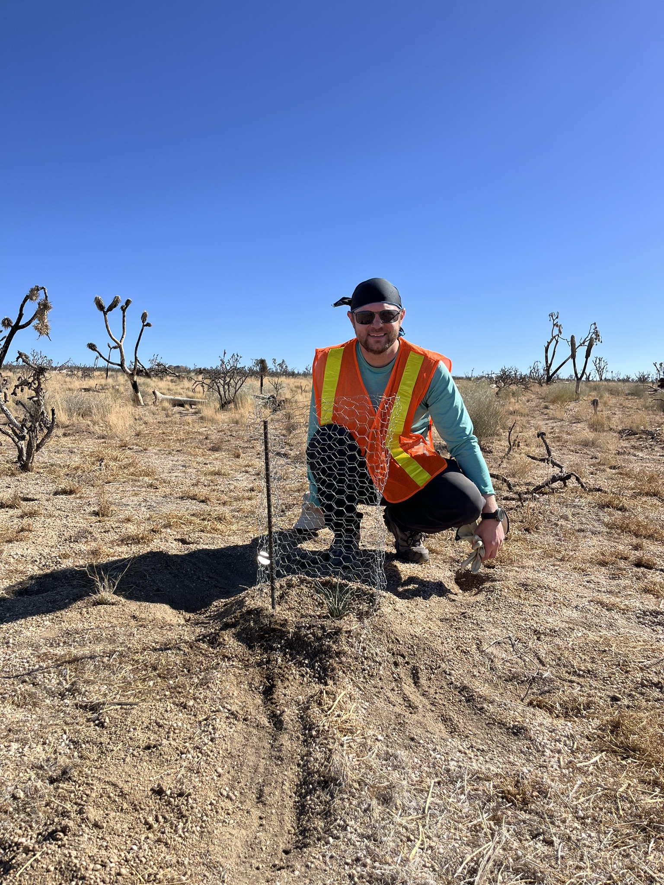
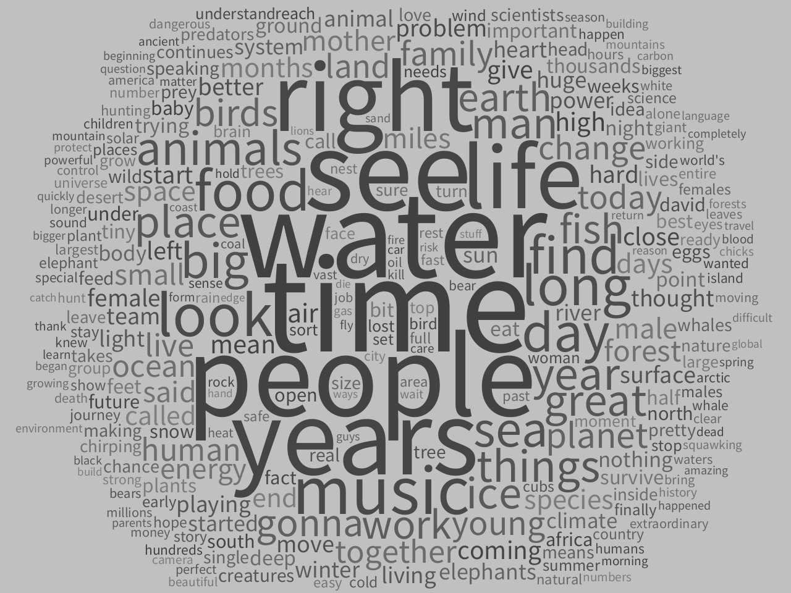
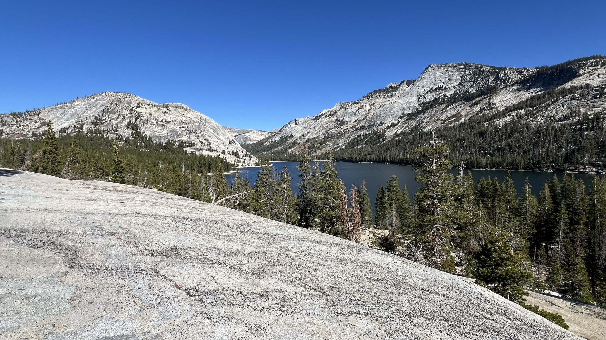
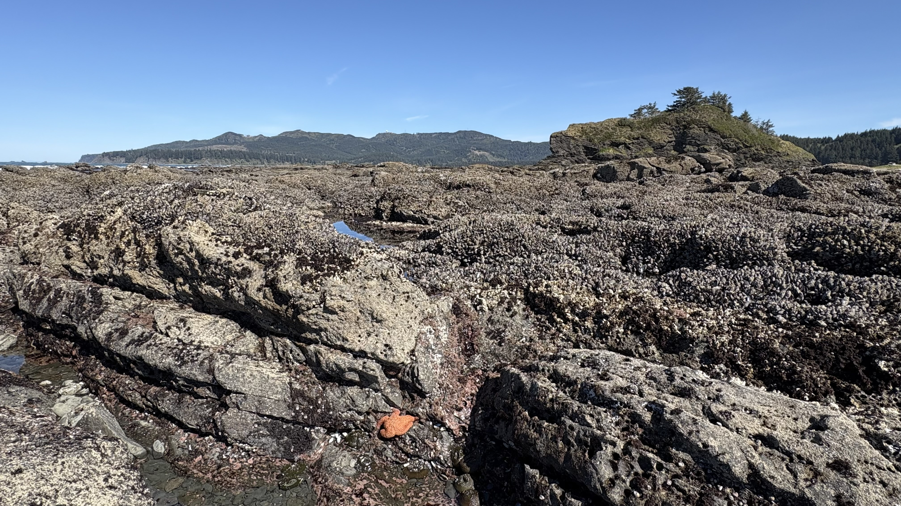
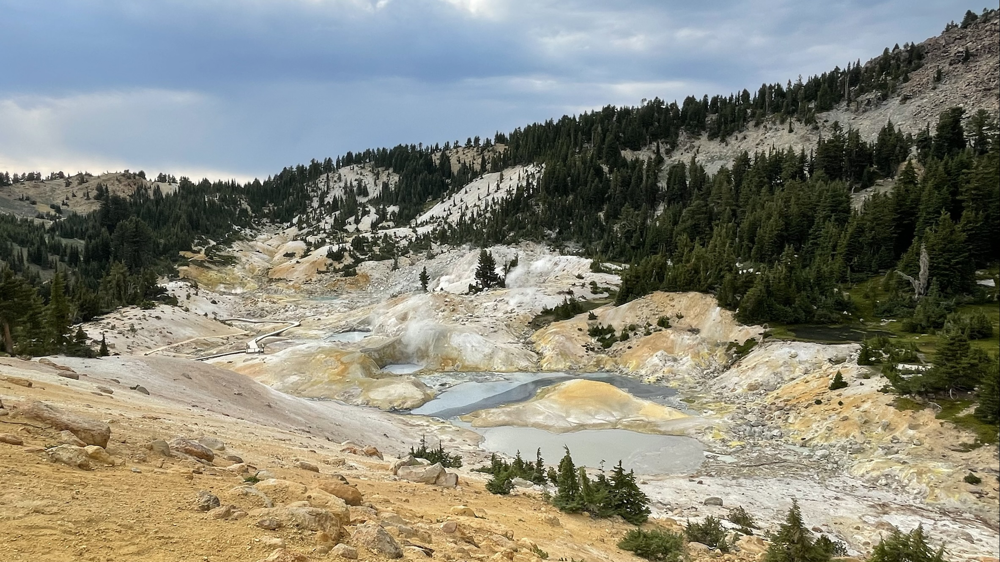
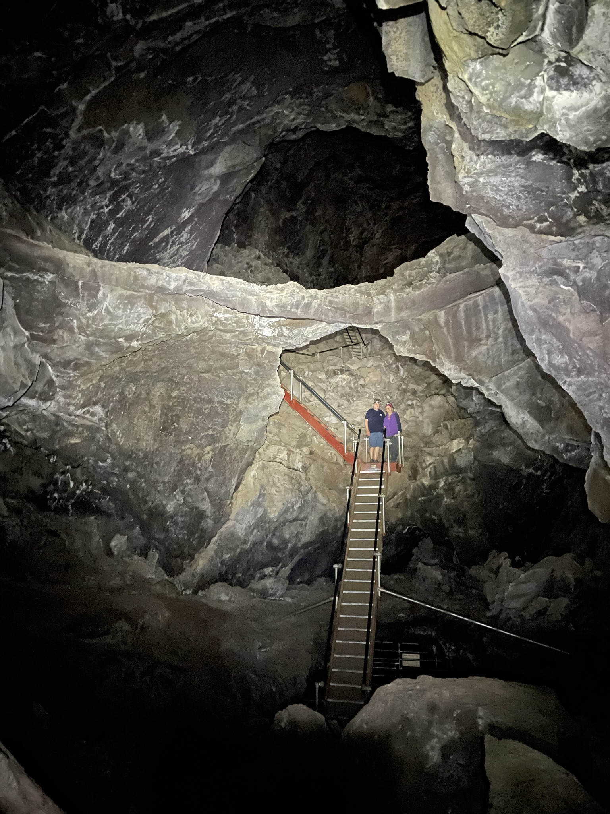
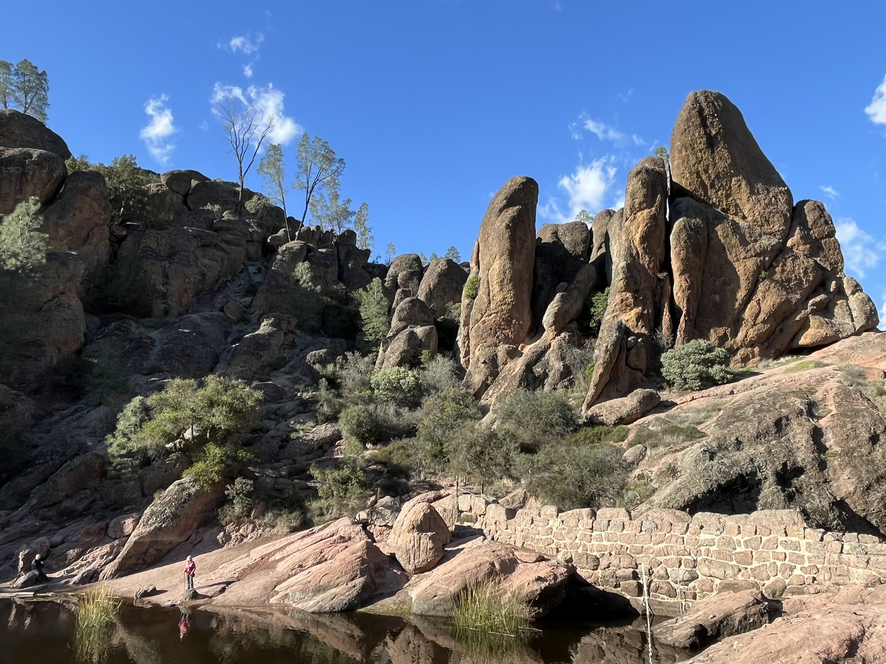

Our Natural Lab: Remarkable Stories of Science from America's National Parks
National parks are lauded as "America's best idea" and celebrated for their cultural history and unparalleled scenery. Yet their illustrious scientific history remains largely untold. How many people know that DNA testing owes its origins to a heat-loving bacterium swimming in Yellowstone's springs? Or how sleep science began when a pair of researchers slumbered for a month in Mammoth Cave?
Our Natural Lab weaves together stories from physics, chemistry, climate science, ecology, biotechnology, anthropology, astronomy, geology, psychology, and traditional ecological knowledge to examine national parks as among the essential settings for science in the history of human inquiry.
We learn how Yosemite and Olympic built climate science's famous Keeling Curve and how plate tectonics owes its "aha" moment to Pinnacles and Mauna Loa. We tour California probing origins, where Lassen's volcanic mud might reveal secrets of life's source, and in a Channel Islands canyon we find some of the continent's oldest human bones. We visit vulnerable glaciers and sequoias, thriving otters and wolves, and forests and rivers where ecology finds its origins in 10,000 years of traditional knowledge.
Our Natural Lab poses questions of the future, too: could an acid-loving fungus unlock the key to sustainability? Can a Kilauea rover guide a drone to search for life in lava tubes? Are desert dark skies like at Arches really antidotes to depression?
The lesson of Our Natural Lab is clear: if we preserve and protect these special places, future generations will continue to write remarkable stories of science in America's national parks.
My methods are deliberately eclectic — quantitative experiments, content analyses, computational linguistics, and archival research. I'm trained as a social scientist, but the questions I chase are not bound by method.
A second book-in-progress applies computational linguistics to more than 1,000 science and nature documentary scripts, tracking measurable shifts in how filmmakers invite us to see ourselves as part of — not apart from — the natural world.

My research and teaching are frequently inspired by time spent outdoors — hiking, kayaking, cycling, camping. Click the references to explore the science behind each site.






I teach across the undergraduate and graduate curriculum — from public speaking for first-year honors students to graduate seminars in research methods and communication theory.
I'm fond of open educational resources, using curated reading lists, podcasts, and video in place of expensive textbooks. Mindful of different learning styles, I build courses around the idea that curiosity is as valuable as knowledge.
I'm always excited to talk about teaching — reach out if you have suggestions or are looking for resources.
Spring 2026
- Communication of Science and Technology
- Communication Technology and Society
- Public Communication and Civic Engagement
Other Courses
- Persuasion
- Theories of Human Communication
- Communication Research Methods
- History of Communication
- Scientific Revolutions
- Seminar in Communication Theory and Research
Robert Lull is an author and professor of science communication whose work sits at the intersection of science, storytelling, and America's public lands. His upcoming book Our Natural Lab offers the first comprehensive account of national parks as essential settings in the history of science.
Based at California State University, Fresno, he teaches and conducts research in the heart of the San Joaquin Valley, where the world's most productive agricultural region sits in the shadow of John Muir's Range of Light.